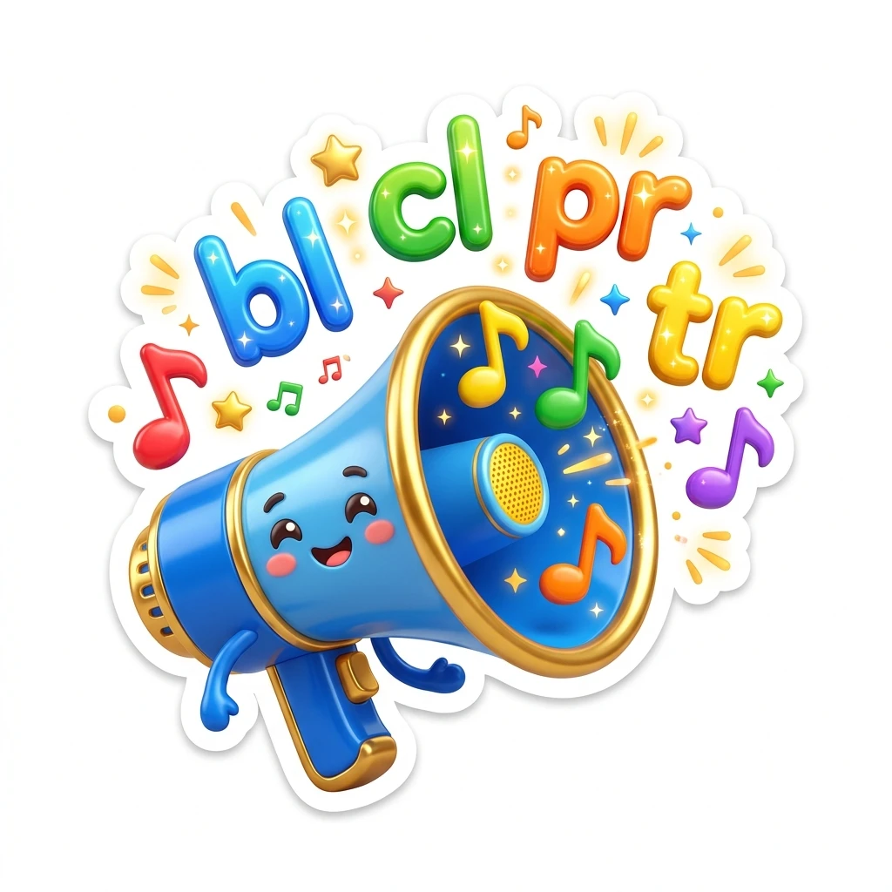
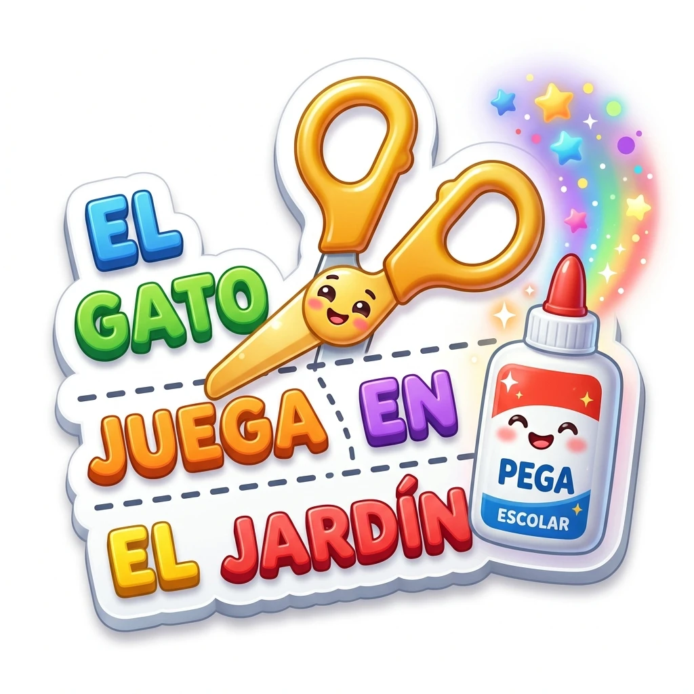
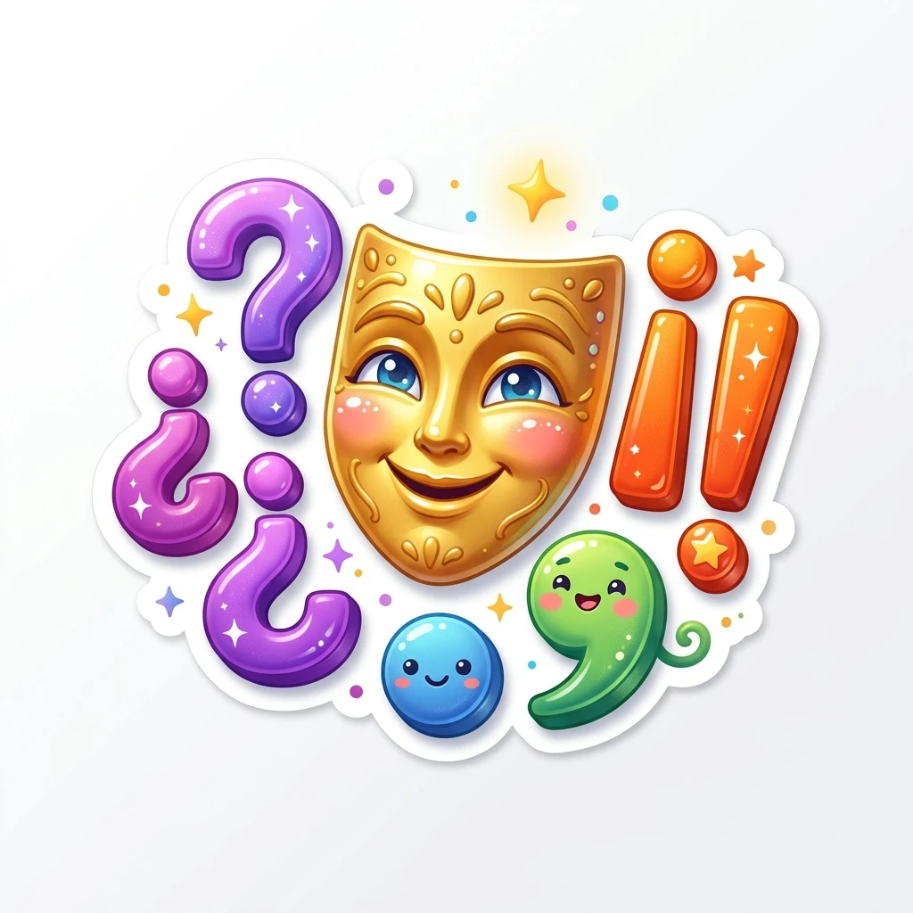
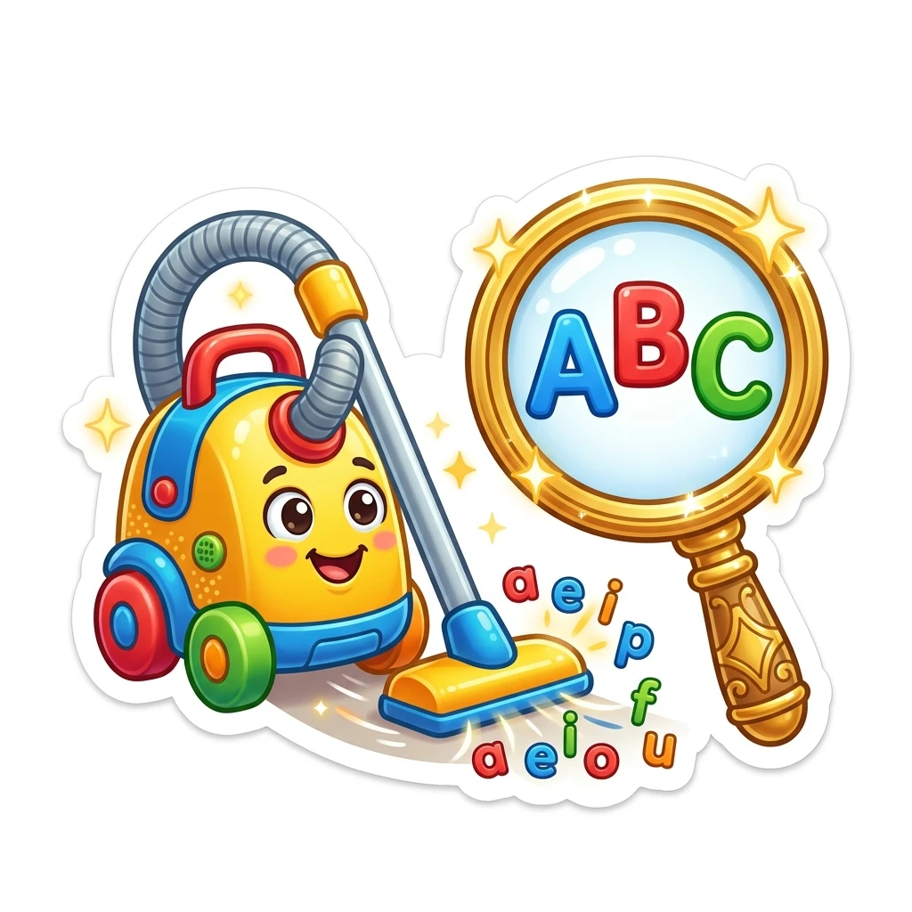

Gimnasio 1
Fonología y Trabadas
Observa la tarjeta ilustrada a color, escucha la palabra y coloca la sílaba correcta.

Gimnasio 2
Fronteras de Palabras
Separa oraciones pegadas con tarjetas espaciadoras, une sílabas y cuenta palabras.

Gimnasio 3
Puntuación y Entonación
Corta la "y" repetitiva con comas y puntos azules, borra puntos intrusos y usa ¿? e ¡!.

Gimnasio 4
Mayúsculas y Ortografía
Cambia mayúsculas y minúsculas en palabras y oraciones, y domina b/d, p/q, b/v, c/s/z.